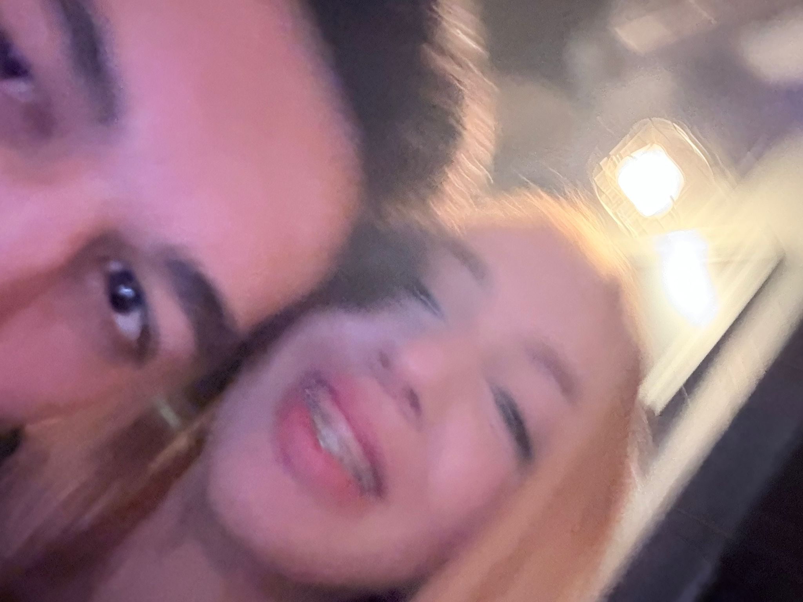
Aşkım canım sevgilimle 7 koca ay ve bir ömür, sunumunu kıskandım açık konuşmam gerekirse bende bu yüzden bildiğim yerden geldim seni çok seviyorum aşkım bir ton anımız oldu bir ton şey gördük daha da fazlasını göreceğiz bunu bilmeni istedim inanılmaz duygular yaşadım inanılmaz mutluyum inanılmaz heyecanlıyım yaşayabileceğimiz şeylere karşı senle yaşayacağım içinde kendimi şanslı görüyorum umarım ilerde gerçekten kendi evimizde mutlu bir şekilde yaşarız ve aklımıza gelmeyecek kadar anımız olur yaşattığın duygular için ve biz için teşekkür ederim hayatım, sabrın için ayrıca teşekkür etmem gerekiyor çünkü zor bir insanım ve sen her gün çabalıyorsun umarım aramızdaki güven sorununda atlatır ve çok mutlu devam ederiz seni seviyorummmmmmm aşkımmmm.
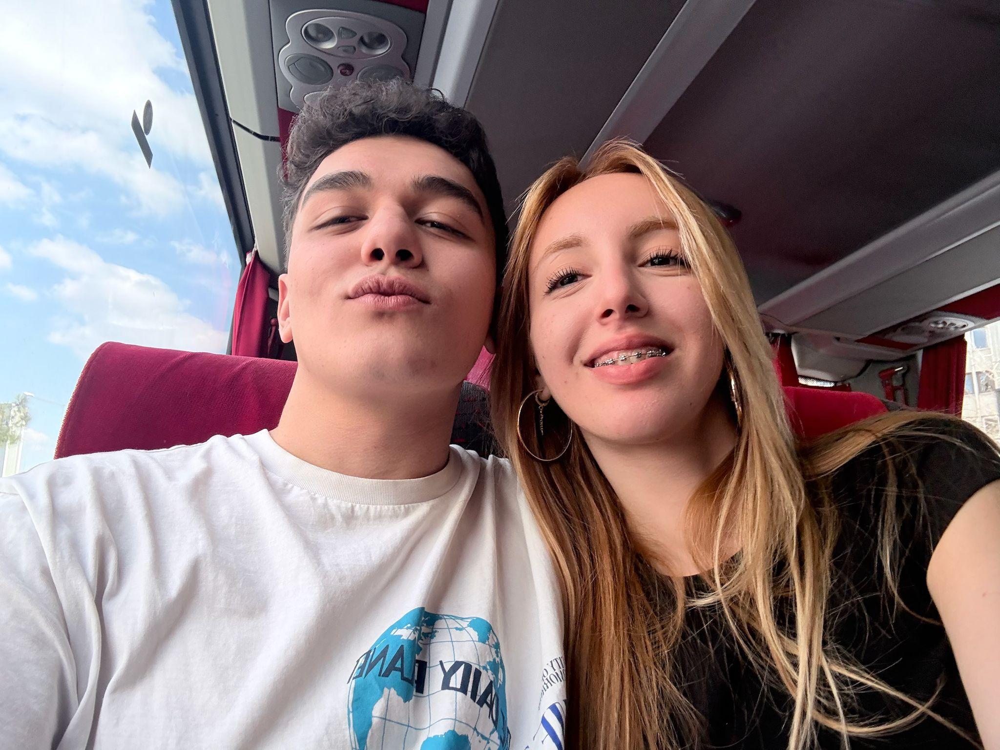
Öncelikle kendi tanıdığım kadarıyla anlatacağım sevgilimin iddiasına göre onu %89,6 oranında tanımaktayım ama bu oran çok yanlış açıkcası ama bir özet geçmem gerekirse aşkım canım sevgilim helin ifşat duygularıyla yaşayan sevdiği ve mutlu olduğu şeyleri kovalamayı seven duygularına kapılarak bazen kaybolan ama günün sonunda dinleyen konuşan çabalayn birisi en çok konuştuğu kişi olarak söylüyorum sohbeti saran gerçekten dinleyen birisi belkide 7 ayda anlattığım her şeyi hatırlayan benle alakalı her detayı koruyan birisi değerlerine sahip çıkan saygıyı ve iletişimi arayan birisi aşık olmam için milyon tane sebep veriyor kısacası haricinde dünyanın en güzel en tatlı en eşşek en mükemmel sevgilisi iyi ki var umarımda bir ömür olur .
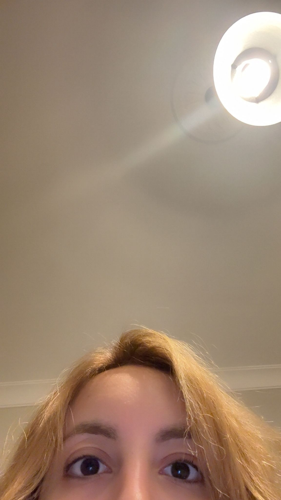
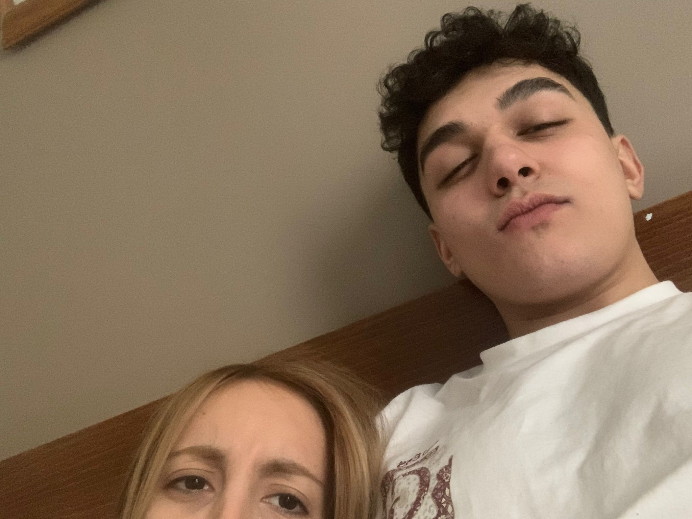
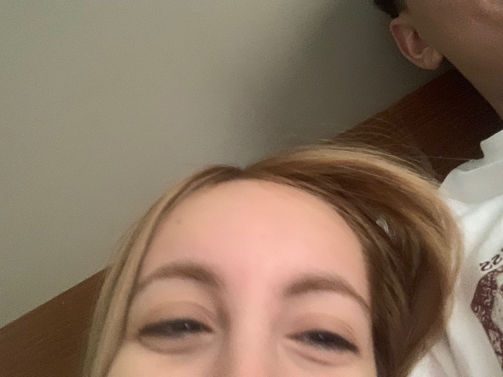
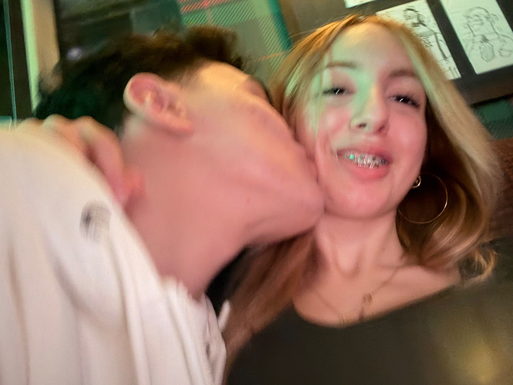
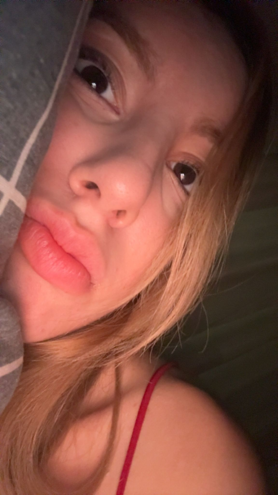
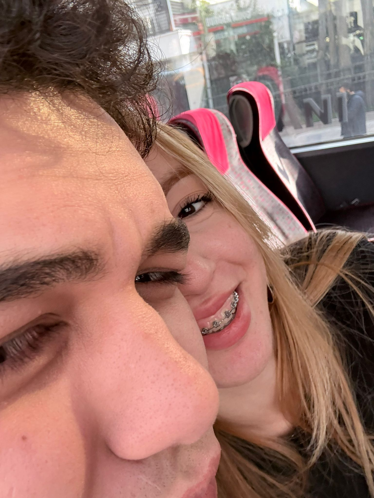
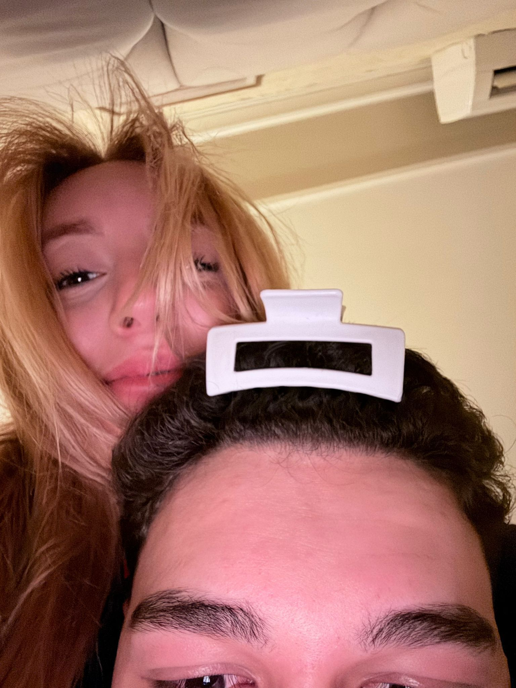
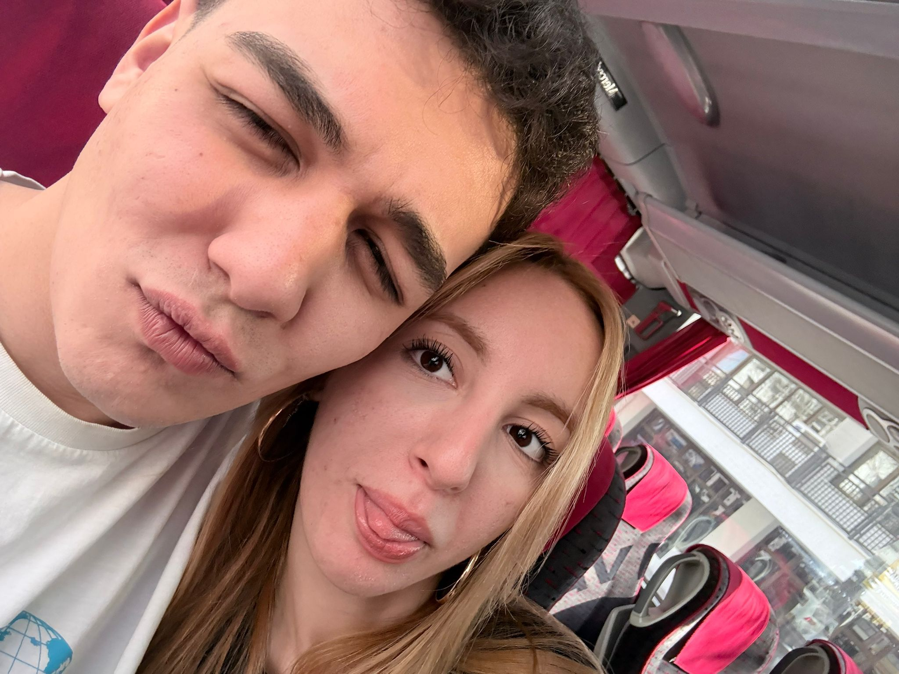
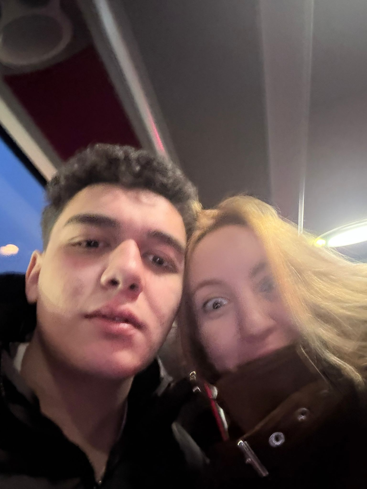
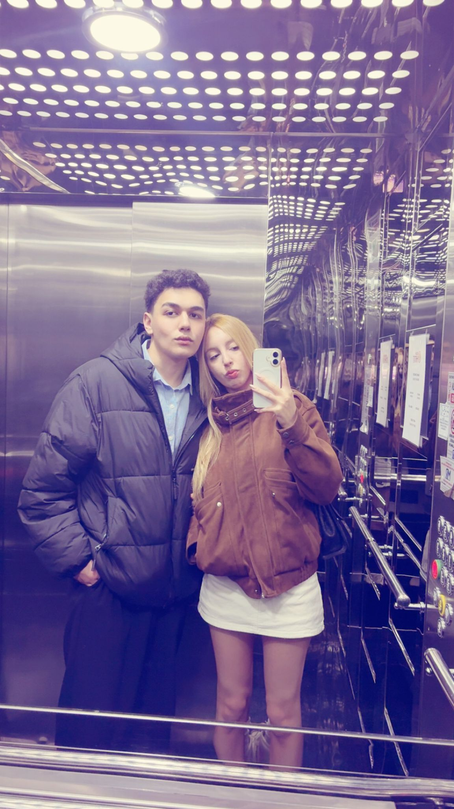
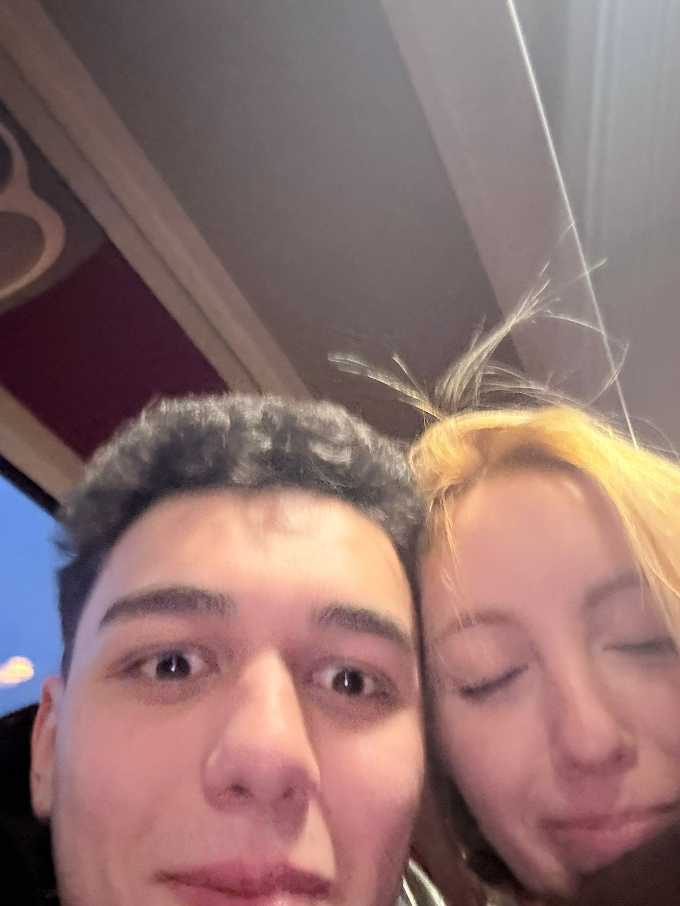
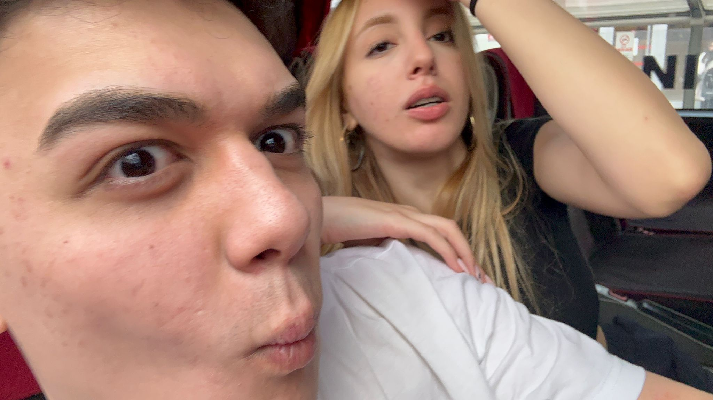
Bu kısmı sonradan ekledim ama bilmen gerektiğini düşünüyorum ben sınavı kazanırım kafamdaki hayallerim ve hedeflerime kosarım oğuzhanla birlikte kıbrıs da okumaya da başlarız ama gitme aşkım veya bu ilişkinin bitmesine sebep olmayalım çünkü ben oraya gittiğimde sen olmazsan ben yarım hissederim 50% eksik hissederim bütün bu hayallerimiz bütün bu çabamız ve beraber geçireceğimiz onca yıl ve bir ömür olsun istiyorum seni gerçekten çok seviyorum kıbrısta okumak senle birlikte bu yolda çabalamak kendim ve biz için güzel bir hayat kurmak istiyorum bu yolda yanımda kal senin gitme ihtimalini düşünmek bile beni çok üzüyor iyi ki varsın ve bu hayalleri başaralım aşkım hep planladığımızdan güzel yaşadık her şeyi ve buda böyle olacak her şey çok güzel olacak hem kendi hayatlarımız hem biz ve beraber olucaz buluşmak bir dert olmayacak sen sınavına çalışırken ben işlerime bakarken yan yana olabileceğiz seni seviyorum düşüncelerimi bilmeni istedim aşkım.
Böyle bir şey yapmak istedim aşkım 7. ayımız kutlu olsun seni çok seviyorum aklında soru işareti olmasın her zaman burda olacağım